Workshop Photo Gallery
Dartmouth Thayer School Summer Workshop in Micromachining students use an e-beam evaporator to deposit silicon on their wafers
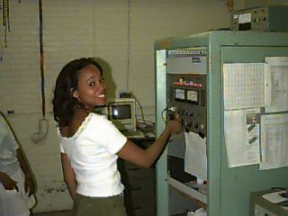
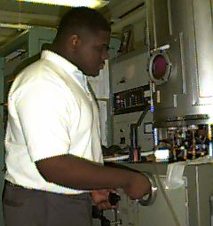
Simone turns on the high voltage; Weldon opens the high vacuum valve
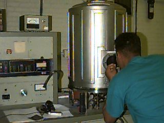
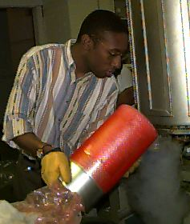
Nicholas visually monitors the evaporation; Joshua fills the cold trap with liquid nitrogen
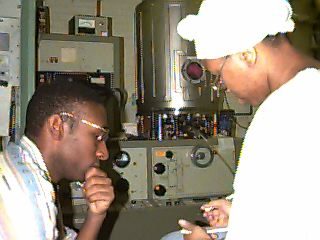
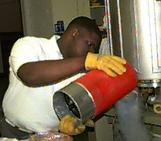
Joshua and Carla calculate the depostion rate;
Weldon refills the cold trap
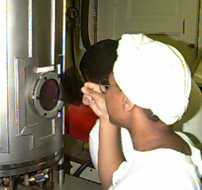
Carla checks the evaproation; the glow of the source she sees
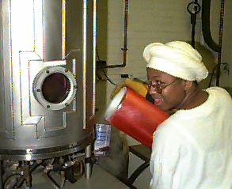
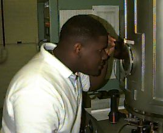
Weldon checks out the source; Carla fills the trap again
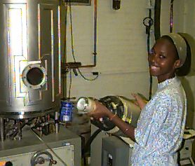
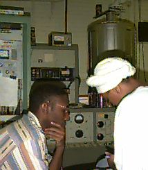
Jen fills the cold trap yet again; Joshu and Carla recheck the calculations
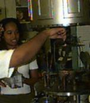
Simone helps remove the wafer and store it